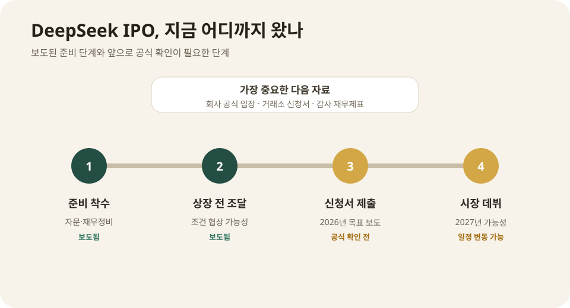

DeepSeek 상장 준비 보도: 중국 AI 경쟁이 자본시장으로 넘어간다
중국 AI 기업 DeepSeek가 이르면 2026년 안에 중국 본토 상장 신청서를 내고 2027년 증시 입성을 목표로 준비하고 있다는 보도가 나왔다. 회사의 공식 발표나 거래소 접수는 아직 없다. 그러나 재무제표 정비, 자문사 선정, 상장 전 추가 자금조달 논의가 사실이라면 DeepSeek는 기술 시연 단계에서 벗어나 매출·비용·지배구조를 공개시장에 설명해야 하는 단계로 이동한다.
IPO Watch
“상장 확정”이 아니라 “본토 IPO 준비를 시작했다”는 단계다
Bloomberg는 익명의 관계자들을 인용해 DeepSeek가 중국 본토 IPO를 준비하고 있으며 올해 신청, 2027년 데뷔 가능성을 검토한다고 보도했다. 회사는 보도에 공식 답변하지 않았고 투자설명서도 제출되지 않았다. 시장·기업가치·공모 규모는 신청서가 공개되기 전까지 확정할 수 없다.

현재 확인된 준비 내용
보도에 따르면 DeepSeek는 재무·회계 자문과 상장 준비를 시작했고, 2026년 재무제표를 정리하고 있다. 본토 IPO를 신청하려면 수익과 비용, 주주구조, 관련회사 거래, 법적 위험을 규정된 형식으로 공개해야 한다. 비공개 스타트업 때와 전혀 다른 수준의 투명성이 요구된다.
상장 신청은 이르면 올해 가능하지만 실제 거래 시작 목표는 2027년으로 언급됐다. 중국 거래소와 감독당국의 심사, 시장 상황, 회사의 추가 자금조달에 따라 일정은 지연되거나 변경될 수 있다. 지금 단계에서 특정 거래소나 공모가를 확정적으로 말할 근거는 없다.
IPO 전에 대규모 비공개 투자 유치도 검토되는 것으로 전해졌다. 보도마다 조달액과 기업가치 수치가 다르고 회사 확인이 없어, 숫자는 협상 목표로만 봐야 한다. 비공개 라운드는 데이터센터와 연구 인력을 확충하고 상장 전 재무 안정성을 높이는 수단이 될 수 있다.
DeepSeek가 자본을 더 필요로 하는 이유
프런티어 모델 개발은 연구비만의 문제가 아니다. 대규모 학습용 가속기, 추론 서버, 전력과 냉각, 고속 네트워크, 데이터 수집, 안전평가, 글로벌 서비스 운영에 지속적인 현금이 들어간다. 모델이 인기를 얻을수록 무료·저가 사용자의 추론비도 함께 커진다.
DeepSeek는 효율적인 학습과 공개 모델 전략으로 이름을 알렸지만, 효율이 컴퓨트 비용을 없애지는 않는다. 더 긴 문맥과 멀티모달, 코딩 에이전트, 전 세계 API를 제공하려면 다음 세대 인프라 투자가 필요하다. 미국의 첨단 칩 수출규제는 조달 선택지를 더 복잡하게 만든다.
공개 모델은 생태계를 키우는 데 유리하지만 직접 매출을 만들기는 어렵다. API, 기업용 배포, 클라우드 파트너십, 맞춤형 모델, 소비자 구독 중 어떤 사업이 비용을 회수하는지 투자자에게 보여줘야 한다. IPO는 자금 확보와 동시에 사업모델 검증 시험이 된다.
상장하면 처음 보게 될 정보
가장 궁금한 것은 매출 구성이다. 소비자 서비스와 개발자 API가 각각 얼마나 성장했는지, 무료 사용자가 유료 고객으로 얼마나 전환되는지, 해외 매출과 중국 내 매출 비중이 어떤지 공개자료에서 확인할 수 있다.
두 번째는 컴퓨트 비용이다. 학습 한 번의 홍보 수치보다 연간 서버 임대료, 칩 감가상각, 전력비, 데이터센터 계약이 회사 현금흐름에 미치는 영향이 중요하다. 효율성을 강조해온 DeepSeek가 실제로 경쟁사보다 낮은 비용 구조를 갖췄는지 재무자료가 보여줄 수 있다.
세 번째는 소유구조다. DeepSeek는 퀀트펀드 High-Flyer와 연결돼 성장했다. 상장서류가 나오면 창업자와 기존 투자자의 지분, 의결권, 관련회사 거래, 신규 투자자, 임직원 보상 구조가 더 분명해진다.
네 번째는 규제위험이다. 중국의 생성형 AI 등록과 콘텐츠 규칙, 데이터 보안, 미국의 칩 수출통제, 해외 정부의 중국 AI 사용 제한이 위험요인으로 어떻게 기재되는지 볼 수 있다. 기술회사의 성장성뿐 아니라 지정학적 노출이 평가 대상이 된다.
왜 상하이 또는 본토 시장인가
중국 본토 상장은 국내 기관과 개인 투자자의 자금을 끌어들이고, 국가 전략산업이라는 이미지를 강화할 수 있다. AI와 반도체를 육성하려는 정책 방향과도 맞는다. 해외 규제와 데이터 문제를 피하면서 중국 내 공급망과 고객을 강조하기에도 유리하다.
반면 심사와 정보공개 부담은 크다. 적자와 대규모 연구비를 가진 AI 스타트업이 어떤 상장 요건을 적용받을지, 수익성보다 기술력을 중시하는 시장 구간을 선택할지 지켜봐야 한다. 상장 장소는 공식 신청서가 나와야 확인할 수 있다.
중국 AI 기업에 미칠 파장
DeepSeek가 성공적으로 상장하면 Moonshot AI, Zhipu AI, MiniMax 등 다른 중국 AI 기업의 기업가치와 자금조달 기준이 생긴다. 비공개 투자자만 평가하던 모델 회사가 공개시장에서 분기 실적과 사용자 지표로 비교되기 시작한다.
반대로 공모가가 기대보다 낮거나 상장 후 주가가 부진하면 AI 스타트업의 막대한 가치평가가 조정될 수 있다. 기술 인지도와 지속 가능한 매출이 다르다는 사실이 드러나면 후발 기업의 자금조달도 어려워진다.
중국 정부에도 상징성이 크다. 미국의 칩 규제 속에서 성장한 대표 AI 기업이 본토 자본시장으로 들어오면 기술자립 서사를 강화할 수 있다. 동시에 상장사로서 투명성과 투자자 보호를 얼마나 요구할지 규제당국의 선택이 시험대에 오른다.
OpenAI·Anthropic 상장 경쟁과 다른 점
미국에서도 OpenAI와 Anthropic의 상장 가능성이 계속 거론된다. 세 회사 모두 컴퓨트 비용과 성장자금이 크지만 시장 환경은 다르다. 미국 기업은 글로벌 클라우드와 기업 고객을, DeepSeek는 중국 내 생태계와 공개 모델 영향력을 더 강하게 설명해야 한다.
공개시장 투자자는 벤치마크보다 현금을 본다. 모델 순위가 몇 달마다 바뀌는 산업에서 고객 유지율, API 사용량, 총이익률, 장기 컴퓨트 계약이 기업가치의 기반이 된다. DeepSeek의 IPO는 AI 기술 경쟁을 재무 경쟁으로 바꾸는 사건이다.
투자자가 조심할 부분
현재 보도는 익명 소식통에 기반하며 회사와 거래소의 공식 서류가 없다. 준비 작업은 중단될 수 있고, 제출 시점과 상장 시점도 달라질 수 있다. 기업가치나 조달액을 확정 숫자로 받아들이면 안 된다.
상장이 현실화돼도 “중국 AI 대표 기업”이라는 이름만으로 수익성이 보장되지 않는다. 가격 경쟁, 무료 모델, 칩 공급, 정부 규제, 해외시장 제한, 빠른 기술 교체가 모두 사업 위험이다. 투자설명서의 비용과 현금흐름을 확인하기 전에는 기대와 사실을 분리해야 한다.
내가 보는 핵심
DeepSeek 상장 준비의 핵심은 자금조달 뉴스가 아니다. 지금까지 외부에서 거의 볼 수 없었던 중국 프런티어 AI 회사의 실제 매출, 컴퓨트 비용, 주주구조가 공개될 수 있다는 점이다. AI 산업을 홍보와 벤치마크가 아니라 재무 숫자로 평가할 기회가 열린다.
다음 확인 지점은 명확하다. 회사의 공식 입장, 거래소 신청서, 최종 상장 장소, 상장 전 투자조건이다. 이 자료가 나오기 전까지는 “2027년 상장 확정”이 아니라 “본토 IPO를 준비 중이라는 복수 보도”로 읽는 것이 정확하다.
Comments
댓글